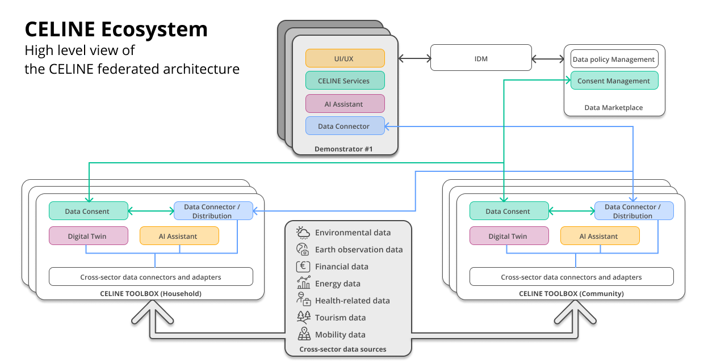

Introduction
About
The digital transformation of the energy system offers numerous benefits, including enhanced connectivity among energy components, direct market access for end-users, and seamless integration of renewable energy sources. However, realizing these benefits requires addressing challenges such as ensuring end-users' adoption of digital technologies, addressing societal acceptance issues, engaging communities effectively, and ensuring decentralization and data sovereignty. Additionally, an integrated framework allowing effective data integration across the energy value chain also including data from other sectors, is required.

Figure 1: High-level view of the CELINE federated architecture
To address these challenges, CELINE introduces an innovative framework (see Figure 1) designed to promote the widespread adoption of digital technologies within the energy sector, thereby fostering seamless interaction and collaboration among energy stakeholders. It focuses on facilitating the adoption of localized, community-based, and digital-driven energy innovations that are user-centric, community-driven, and tailored to address the specific needs of geographical areas or communities. CELINE will conceptualize, co-design, develop, and demonstrate an open-source cross-sector data-driven digital ecosystem and toolbox, comprising digital twins of community energy systems and AI assistant tools, enabling the creation of tailored cross-sector data-driven services aimed at:
-
support community-led self-consumption and production schemes
-
enhance end-users' capabilities in managing energy resources, optimizing energy usage, and making well-informed energy-related decisions
-
empower end-users by improving their digital and energy literacy, enhancing user experience, and overcoming potential resistance and barriers.
CELINE tools and services will be tested in three real-world Demonstrators (Ds) across different European regions, offering diverse climate, geographical, and socio-economic conditions (Valencia/ES, Lappeenranta/FI, and Alpe Cimbra/IT).
Context
As Europe advances toward a digitally integrated and data-driven society, the concept of dataspaces has emerged as a cornerstone of the European data economy. Dataspaces aim to create interoperable, sovereign, and trusted environments for data sharing across sectors and borders, in alignment with EU values and legislation. Driven by strategic initiatives like the European Data Strategy, the Data Governance Act, and numerous domain-specific efforts, dataspaces enable organizations and individuals to collaborate through a federated, modular architecture that preserves data sovereignty and enhances interoperability. Within this evolving landscape, the development of dedicated tools to support the creation, governance, and operation of dataspaces is critical. This project responds to that need by designing and developing a data toolbox grounded in the principles and practices of Dataspace architectures. The toolbox will empower stakeholders to build and manage interoperable, trust-enabled data ecosystems aligned with current and emerging European frameworks.
Objective
The objective of this repository is to provide a state-of-the-art (SotA) analysis framed as a broad landscape review that informs the design and implementation of the CELINE data toolbox. The analysis identifies and evaluates key developments across regulatory, strategic, technological, and semantic domains relevant to dataspaces, clarifying that the inclusion of any specific initiative, technology, framework, or methodology does not imply CELINE’s endorsement or commitment to adopt it. Instead, the SotA serves to:
-
Understand the policy context by mapping EU legislation and strategies that shape sovereign, trusted, and interoperable data flows.
-
Survey active initiatives and programmes to reveal reusable reference architectures, certification schemes, and open-source building blocks.
-
Analyse technical foundations and ontologies that underpin interoperability, data sovereignty, and cross-sector collaboration.
-
Synthesise cross-cutting themes that influence the Dataspace paradigm and highlight gaps or innovation opportunities.
The insights gained will guide subsequent tasks and work packages, where final selection, adaptation, and integration decisions will be made according to concrete requirements, integration needs, and technical feasibility, in aligning CELINE with European priorities, leveraging proven methodologies, and maximising the project’s impact and relevance.
Scope of the Repository
The structure of this repository reflects a layered approach to capturing the ecosystem around dataspaces:
-
EU Policies & Recommendations: An overview of regulatory and strategic guidance from EU institutions that inform the design of interoperable and ethical data systems. A list of analysed EU policies & recommendations is presented in Table 1.
-
EU Initiatives and Programs: A survey of large-scale European efforts such as GAIA-X, EOSC, and European dataspaces that serve as contextual anchors. A list of analysed EU initiatives and programs is presented in Table 2.
-
Funded Projects: A targeted review of relevant Horizon 2020, Horizon Europe, and Digital Europe projects to derive lessons, gaps, and synergies. A summary of the analysed projects is presented in Table 3.
-
Ontologies and Data Models: An analysis of semantic assets that enable cross-domain data interoperability, discoverability, and governance. A list of analysed ontologies and data models is provided in Table 4.
-
Analysis of Key Themes: A synthesis of recurring insights related to trust frameworks, data sovereignty, federation, and sustainability in dataspaces.
-
Conclusion: A consolidation of findings and implications to guide the ongoing development of the project’s data toolbox.
Each chapter contributes to a comprehensive understanding of the current landscape, offering a foundation for innovation that is aligned, interoperable, and sustainable within the evolving European data ecosystem. The analysis spans multiple domains (e.g., energy, mobility, health, manufacturing) to extract transferable principles and best practices that can inform a generic yet adaptable toolbox for Dataspace development.
Table 1: List of EU Policies and Recommendations considered during the SotA analysis.
| S# | Policy Name | Type (Policy/Recommendation) | Relevant Sector | EU Institution | Publication Date | Status | Link |
|---|---|---|---|---|---|---|---|
| 1. | Affordable Energy Action Plan | Recommendation | all | EU Institution | ongoing and non-legislative | Draft | Affordable Energy Action Plan |
| 2. | Clean industrial deal | Recommendation | All | EU Institution | ongoing and non-legislative | Draft | Clean industrial deal |
| 3. | CRA (Cyber Resilience Act) | Regulation | All | European Parliament & Council | 2024 | Active | Cyber Resilience Act (CRA) |
| 4. | Digital Markets Act | Policy | Digital Economy | European Commission | 2022 | Active | Digital Markets Act |
| 5. | Digitalisation of Energy Action Plan | Recommendation | all | European Commission | 2022 | Active | Digitalisation of Energy Action Plan |
| 6. | Energy Efficiency Directive | Recommendation | Energy | European Parliament | 2023 | Draft | Energy Efficiency Directive |
| 7. | Energy efficiency directive | Directive | All | European Commission | 2023 | Active | Energy efficiency directive |
| 8. | Energy poverty | Directive | Energy | European Commission | 2024 | Active | Energy poverty |
| 9. | EU AI Act | Policy | All | European Parliament & Council | 2024 | Active | EU AI Act |
| 10. | EU Data Governance Act | Policy | Cross-sector | European Commission | 25 November 2020 (Proposal), adopted on 30 May 2022 | Active | EU Data Governance Act |
| 11. | EU Data Strategy | Policy | All | European Parliament & Council | 2023 | Active | EU Data Strategy |
| 12. | EU Electricity Market Design | Regulation | Energy market | European Commission | 2024 | EU Electricity Market Design | |
| 13. | European Electricity Directive (EMD) | directive | Energy | European Commission | 2024 | Active | European Electricity Directive (EMD) |
| 14. | European Green Deal and REPower EU plan | Plan | All | EU Institution | 2024 | Active | |
| 15. | Fit for 55 | Policy | Climate & Energy | European Commission | 2021 | Active | Fit for 55 |
| 16. | General Data Protection Regulation (GDPR) | Regulation | All | European Parliament | 2018 | Active | General Data Protection Regulation (GDPR) |
| 17. | Revised Renewable Energy Directive (RED II) | DIRECTIVE | Energy | European Commission | 2023 | Active | Revised Renewable Energy Directive (RED II) |
Table 2: List of EU Initiatives and Programs considered during the SotA analysis.
| S# | Initiative Name | EU Institution | Funding Program | Start Date | End Date | Status | Link |
|---|---|---|---|---|---|---|---|
| 1. | Connecting Europe Facility | European Investment Bank | CEF | 2021 | 2027 | Ongoing | Connecting Europe Facility (CEF) |
| 2. | Digital Europe Programme | European Commission | Digital Europe | 2021 | 2027 | Ongoing | Digital Europe Programme |
| 3. | European Open Science Cloud (EOSC) | European Commission | Horizon 2020, Horizon Europe | 2018 | Ongoing | Active | European Open Science Cloud (EOSC) |
| 4. | GAIA-X | European Commission (with key contributions from France and Germany) | National and EU-level funding (incl. Horizon Europe and German BMWK) | 2019 | Ongoing | Active | GAIA-X |
| 5. | Gen4AI | European Commission | EIC Work Programme | 2021 | 2027 | Active | GenAI4EU (Gen4AI) |
Table 3: List of funded projects analyzed for the SotA analysis.
| S# | Project Name | Funding | Consortium | Start Date | End Date | Budget | Link | ||
|---|---|---|---|---|---|---|---|---|---|
| Program | Call ID | Coordinator | Partners | 1. | AI4EU | Digital Europe | DIG-2022-AI | European AI Institute | 10 universities and tech firms | 2022 | 2025 | €15M | AI4EU |
| 2. | Battery2030+ | Horizon Europe | HE-2023-ENER | CEA France | 20+ research institutions | 2023 | 2028 | €30M | Battery2030+ |
| 3. | BeyondEE | NetZeroCities Pilot Cities | HORIZON-RIA-SGA-NZC-101121530 | City of Lappeenranta | 2 partners | 01.05.2024 | 30.04.2026 | 0,6 M | BeyondEE |
| 4. | BIPED | Horizon Europe | HORIZON-MISS-2023-CIT-01-02 | DANMARKS TEKNISKE UNIVERSITET | 12 partners | 01.01.2024 | 21.12.2026 | 6,3M | BIPED |
| 5. | BlueBird | Horizon Europe | HORIZON-CL5-2024-D4-01 | CIMNE | 15 partners and 1 AE | Jan. 2025 | Dec. 2027 | €5.7M | BlueBird |
| 6. | CLIMRES | Horizon IA | HORIZON-CL5-2023-D4-02 | SINGULARLOGIC | 22 partners | Jun. 2024 | Jun. 2027 | €5M | CLIMRES |
| 7. | COMANAGE | LIFE21-CET | LIFE21-CET-ENERCOM | ECOSERVEIS | 10 partners | 01.11.2022 | 31.10.2025 | €1.7M | COMANAGE |
| 8. | COMMUNITAS | Horizon Europe | HORIZON-CL5-2022-D3-01 | LABELEC ESTUDOS DESENVOLVIMENTO E ACTIVIDADES LABORATORIAIS SA | 17 partners | 01.01.2023 | 30.06.2026 | 6M | COMMUNITAS |
| 9. | COSMIC | Horizon IA | HORIZON-CL4-2024-DIGITAL-EMERGING-01 | INETUM ESPAÑA | 18 partners and 3 AE | Dec. 2024 | Nov. 2027 | €10M | COSMIC |
| 10. | DECODIT | Horizon Europe | Topic: HORIZON-CL5-2023-D3-03-04 | EUROPEAN DYNAMICS LUXEMBOURG | 18 partners | 01.06.2024 | 01.12.2027 | €5.1M | DECODIT |
| 11. | DEDALUS | Horizon Europe | HORIZON EUROPE SC5 – Climate, Energy & Mobility | ENGINEERING | 21 partners | May. 2023 | Apr. 2026 | €7.4M | DEDALUS |
| 12. | EASE | Energie-forschung 2022 (Austria) | Climate change adaptation | AIT | 6 partners from Austria | 01.11.2023 | 31.10.2026 | EASE | |
| 13. | ECLIPSE | Digital Europe | DIGITAL-2023-DEPLOY-BESTUSE-TECH-04 | ETRA | 23 partners | 01.09.2024 | 31.08.2026 | €9.8M | ECLIPSE |
| 14. | ECOEMPOWER | LIFE-2022-CET | 101120775 — LIFE22-CET-ECOEMPOWER | FONDAZIONE BRUNO KESSLER (FBK) | 10 partners | 01.09.2023 | 31.08.2026 | 1,5M | ECOEMPOWER |
| 15. | EDDIE | Horizon Europe | HORIZON-CL5-2021-D3-01 | FHOOE (University of Applied Sciences Upper Austria) | 17 partners | 01.01.2023 | 13.06.2026 | €8.8M | EDDIE |
| 16. | EKATE+ | INTERREG POCTEFA | EFA41/01 | ESTIA | 7 partners | Jan. 2024 | Dec. 2026 | €1.9M | EKATE+ |
| 17. | ENERGIZE | LIFE23 | LIFE23-CET-ENERGIZE/101167570 | IRIS TECHNOLOGY SOLUTIONS, SOCIEDAD LIMITADA | 9 partners | Jul. 2024 | Jun. 2027 | €1.8M | ENERGIZE |
| 18. | HYDROGEN4EU | Horizon Europe | HE-2023-RES | Fraunhofer Institute | 15 partners across the EU | 2023 | 2026 | €20M | HYDROGEN4EU |
| 19. | int:net | Horizon Europe | HORIZON-CL5-2021-D3-01-03 | FRAUNHOFER GESELLSCHAFT ZUR FORDERUNG DER ANGEWANDTEN FORSCHUNG EV | 12 partners | 01.05.2022 | 21.10.2025 | 5 M | int:net |
| 20. | INTELLIGENT | Horizon Europe | HORIZON-CL5-2023-D3-03-05 | R2M | 15 partners | 06.12.2024 | 31.10.2027 | €5.9M | INTELLIGENT |
| 21. | MonitorEE | Interreg Europe | Greener Europe (policy objective 2) Energy efficiency | Consortium Extremadura Energy Agency Consorcio Agencia Extremeña de la energía (AGENEX) | 6 partners | 01.03.2023 | 28.02.2027 | 1,4 M | MonitorEE |
| 22. | PARMENIDES | Horizon Europe | HORIZON-CL5-2022-D3-01-10 | AIT | 7 partners | 01.01.2023 | 31.12.2025 | €3.6M | PARMENIDES |
| 23. | ReLIFE | LIFE23-CET | 101167067 - LIFE-2023-CET-BETTERRENO | ACCADEMIA EUROPEA DI BOLZANO Eurac Research | 8 partners | 01.10.2024 | 30.09.2027 | - | ReLIFE |
| 24. | Renowave | Interreg BSR | C1 - split | County board of Dalarna, Sweden | 11 partners | 01.01.2023 | 31.12.2025 | 3,5 M | Renowave |
| 25. | SUN4ALL | Horizon Europe | HORIZON - 101032239 | ECOSERVEIS | 11 partners | 01.10.2021 | 30.09.2024 | €1.7M | SUN4ALL |
| 26. | V2Market | Horizon Europe | HORIZON - 101033686 | ECOSERVEIS | 9 partners | 01.09.2021 | 01.09.2024 | €2M | V2Market |
Table 4: List of analyzed ontologies and data models.
| S# | Name | Type | Domain | Weblink |
|---|---|---|---|---|
| 1. | ASHRAE Standard 223P | Data Model | Energy / Building | ASHRAE Standard 223P |
| 2. | BOnSAI (Smart Building Ontology for Ambient Intelligence) | Ontology | Smart Home | BOnSAI (Smart Building Ontology for Ambient Intelligence) |
| 3. | BRICK Schema | Ontology | Buildings | BRICK Schema |
| 4. | CIM (Common Information Model) | Data Model | Electrical Networks | CIM (Common Information Model) |
| 5. | CityGML | Ontology | Urban Built Environment | CityGML |
| 6. | CityGML Energy ADE | Ontology | Energy Use | CityGML Energy ADE |
| 7. | CityGML UtilityNetworkADE | Ontology | Energy Networks | CityGML UtilityNetworkADE |
| 8. | Climate-Ready Barcelona Project | Ontology | Energy | Bigg Ontology |
| 9. | Common Grid Model Exchange (CGMES) | Data Model | Transmission Network Model Exchange (TSOs) | Common Grid Model Exchange (CGMES) |
| 10. | DABGEO (Domain Analysis-Based Global Energy Ontology) | Ontology | Energy |
DABGEO (Domain Analysis-Based Global Energy Ontology) DABGEO: A reusable and usable global energy ontology for the energy domain |
| 11. | DECENT: An Ontology for Decentralized Governance in the Renewable Energy Sector | Ontology | Renewable Energy | DECENT: An Ontology for Decentralized Governance in the Renewable Energy Sector |
| 12. | DLMS/COSEM (IEC 62056) | Data Model | Electricity & Utilities (Smart Metering) | DLMS/COSEM (IEC 62056) |
| 13. | EFOnt (Energy Flexibility Ontology) | Ontology | Building Energy Flexibility | EFOnt (Energy Flexibility Ontology) |
| 14. | Electricity Markets Ontology (EMO) | Ontology | Energy | Electricity Markets Ontology (EMO) |
| 15. | EM-KPI (Energy Management KPI Ontology) | Ontology | Smart grid performance (energy KPIs) | EM-KPI (Energy Management KPI Ontology) |
| 16. | Energy Grid Ontology for Digital Twins | Ontology | Energy | Energy Grid Ontology |
| 17. | HADGO (Hybrid AC/DC Grid Ontology) | Ontology | Energy | HADGO (Hybrid AC/DC Grid Ontology) |
| 18. | IEC 61400-25 | Information Model | Renewable Energy (Wind Energy) | IEC 61400-25 |
| 19. | IEC 61850 | Data Model | Electricity (Substation & Automation) | |
| 20. | IFC (Industry Foundation Classes) | Data Model | Buildings | IFC (Industry Foundation Classes) |
| 21. | OASIS Energy Market Information Exchange (EMIX) | Information Model | Smart Grid (Energy Markets) | OASIS Energy Market Information Exchange (EMIX) |
| 22. | OEMA (Ontology for Energy Management Applications) | Ontology | Energy | OEMA Ontology |
| 23. | OEO (Open Energy Ontology) | Ontology | Energy | OEO (Open Energy Ontology) |
| 24. | Ontology for Cybersecurity | Ontology | Energy | Cybersecurity Ontology |
| 25. | Ontology for Fault Detection | Ontology | Energy | Fault Detection Ontology |
| 26. | Ontology for Power Transformer Fault Diagnosis | Ontology | Energy | Power Transformer Ontology |
| 27. | Ontology on Cascading Effects in Critical Infrastructures | Ontology | Energy | Cascading Effects Ontology |
| 28. | Ontology-based facility data model for energy management | Data Model | Energy management | Ontology-based facility data model for energy management |
| 29. | OntoMG (Ontology for Microgrids) | Ontology | Energy | OntoMG Ontology |
| 30. | OntoPowSy (Ontology for Power Systems) | Ontology | Energy | OntoPowSy (Ontology for Power Systems) |
| 31. | Onto-SB: Human Profile Ontology for Energy Efficiency in Smart Building | Ontology | Smart Building Energy Efficiency & User Profiling | Onto-SB: Human Profile Ontology for Energy Efficiency in Smart Building |
| 32. | OntoWind Ontology | Ontology | Wind Energy | OntoWind Ontology |
| 33. | OpenADR ontology | Ontology | Demand Response (DR) in Smart Grids | |
| 34. | OpenFMB (Open Field Message Bus) | Data Model | Smart Grid (Distributed Energy/IoT) | OpenFMB (Open Field Message Bus) |
| 35. | PECO (PARMENIDES Energy Community Ontology) | Ontology | Energy | PECO (PARMENIDES Energy Community Ontology) |
| 36. | PQONT (Power Quality ONTology) | Ontology | Electrical Power Quality | PQONT (Power Quality ONTology) |
| 37. | SAREF (Smart Appliances REFerence ontology) | Ontology | Energy | SAREF (Smart Appliances REFerence ontology) |
| 38. | SAREF4BLDNG (ETSI) | Ontology | Smart Home/Building | SAREF4BLDNG (ETSI) |
| 39. | SAREF4EHAW (ETSI) | Ontology | Wearables | SAREF4EHAW (ETSI) |
| 40. | SAREF4ENER (SAREF extension for Energy) | Ontology | Energy | SAREF4ENER (SAREF extension for Energy) |
| 41. | SARGON (Smart Energy Grid Ontology) | Ontology | Energy | SARGON Ontology |
| 42. | SEA Knowledge Model and Electrical Power System Ontology | Ontology | Energy | SEA Knowledge Model |
| 43. | SEAS (Smart Energy Aware Systems Ontology) | Ontology | Energy | SEAS (Smart Energy Aware Systems Ontology) |
| 44. | Smart Energy Aware Systems | Ontology | Energy | Smart Energy Aware Systems |
| 45. | Smart Home Ontology (SHO) | Ontology | Smart Home | Smart Home Ontology (SHO) |
| 46. | Solar Soft Cost Ontology (SSCO) | Ontology | Residential Solar PV Soft Costs | Solar Soft Cost Ontology (SSCO) |
| 47. | SSN (Semantic Sensor Network Ontology) | Ontology | Energy | SSN Ontology |
| 48. | ThinkHome Ontology | Ontology | Smart Home |